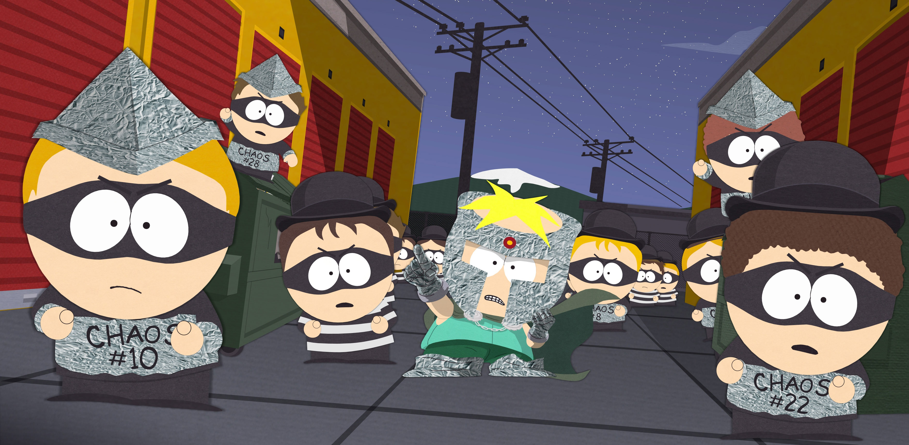

About Professor Chaos
Professor Chaos from South Park is a comically inept supervillain alter ego of Butters who dreams of spreading chaos but constantly fails in absurd and harmless ways.

Professor Chaos and his crew
Professor Chaos’s Characteristics
- Inept villainy – he tries to be evil but always fails in ridiculous ways.
- Overdramatic personality – he speaks and acts like a grand supervillain.
- Naive innocence – despite his "evil" plans, he remains childlike and harmless.
- Strong imagination – he fully commits to his fantasy of being a chaotic mastermind.